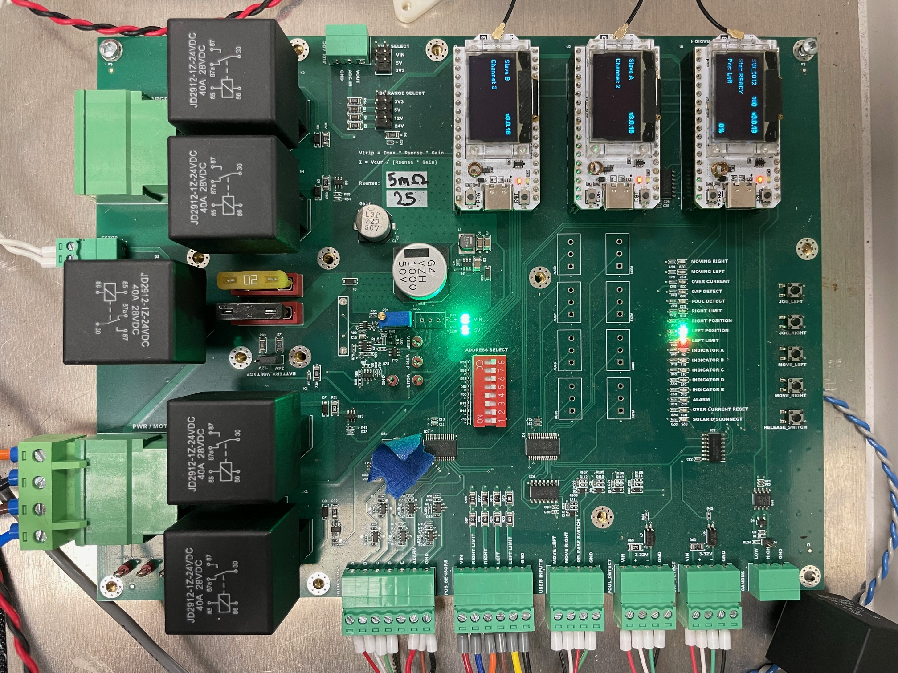
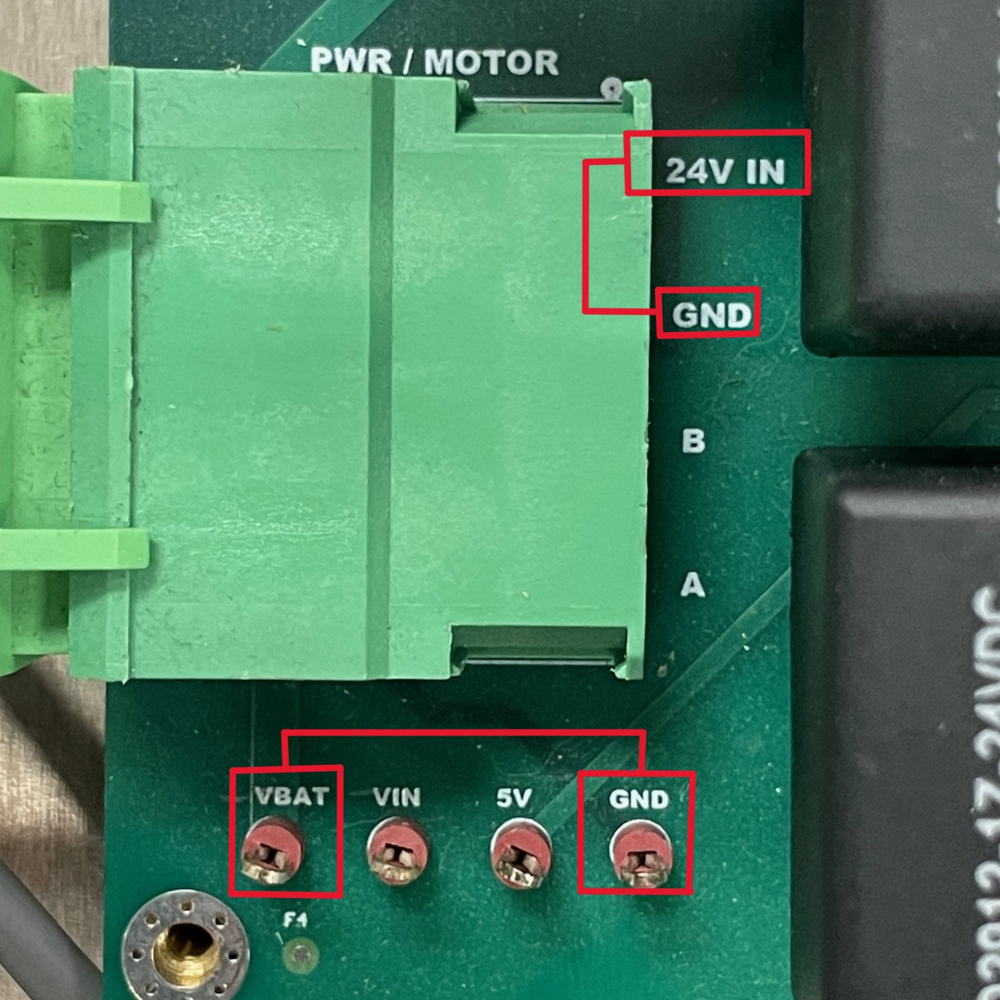
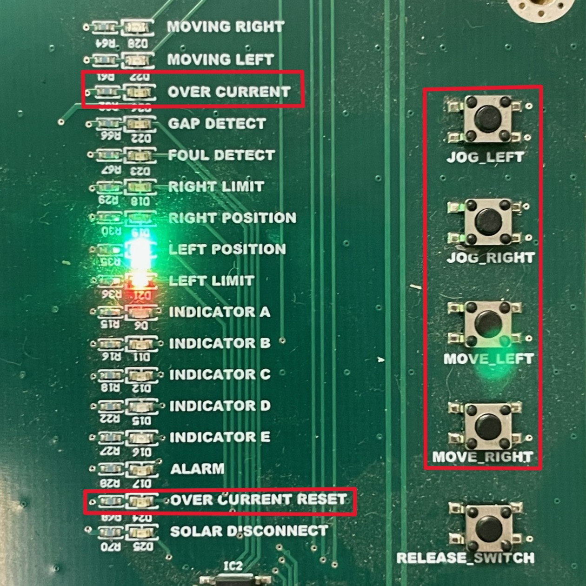
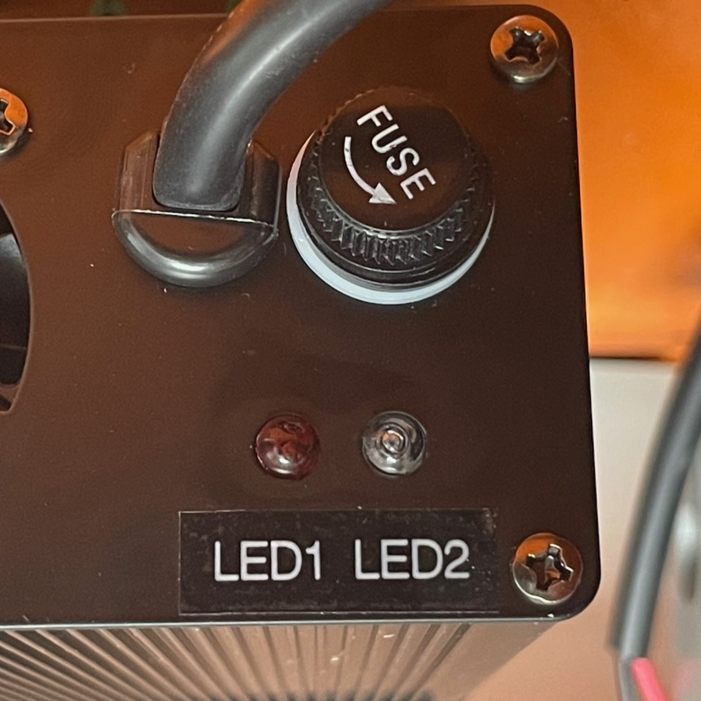
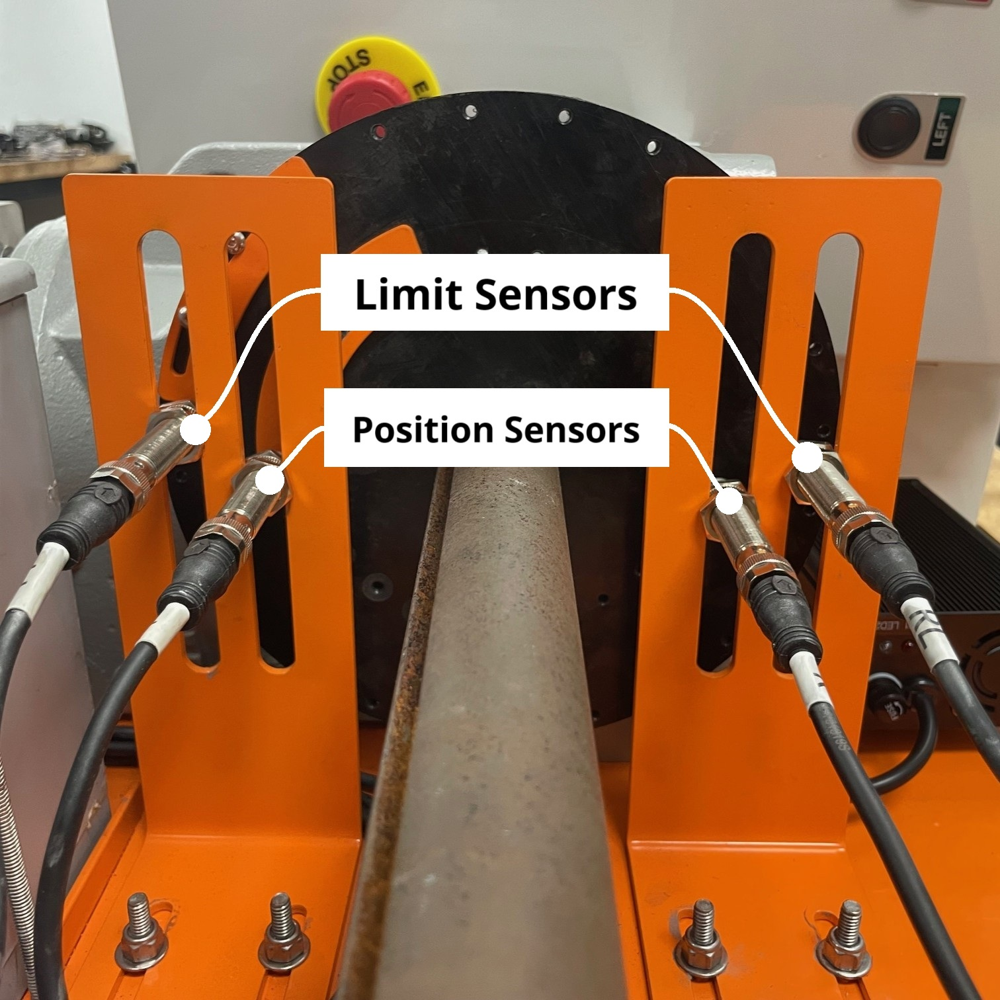
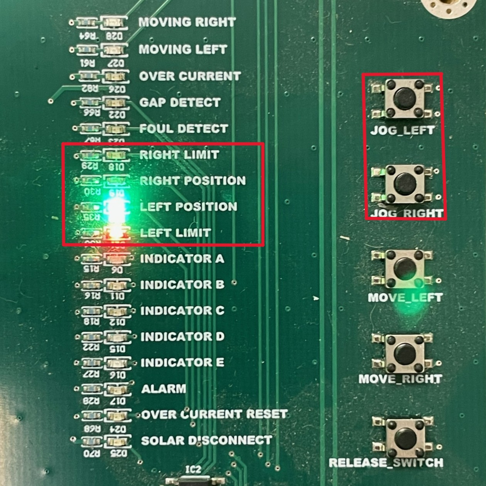

Troubleshooting

6.1 Diagnostic Steps¶
-
Verify that the device is connected to a working power source
-
Visually inspect the status lights
- Green : Operator is currently connected to device
- Yellow : Device is currently in motion
- Red : Error
-
Visually inspect the switch
- If switch is obstructed or housing is visibly rotated off of the ground, refer to Overcurrent Issues
-
Open enclosure and check for any error codes or status lights.
- Verify that the device is in the correct mode for local control and that no remote users are connected
- Ensure that cable, relay, and fuse connections are secure

-
Disconnect plug labeled
Chargerand measure input voltage- Using a multimeter, probe across
24V INandGND, orVBATandGND - Perform this step before proceeding as low voltage may present as other errors
- If board is receiving less than
24V, refer to Charger Issues
- Using a multimeter, probe across
-
Verify that sensors are securely connected and in the correct positions
- Refer to Sensor Issues
-
If board is receiving
24V, no other issues have been found, and errors are still present:- Refer to Board Issues
6.2 Overcurrent Issues¶

- Overcurrents may be caused by an obstruction in the switch, or a sudden change in the load experienced by the motor
- The
Over Current Resetlight indicates an overcurrent issue has occurred - After an overcurrent issue, the RARS must be reset to unlock movement
- Upon resetting, use
Jog LeftandJog Rightbuttons to test for resistance throughout the range of travel - Once any obstructions have been removed and motion has been tested, close lid and use
Move LeftandMove Rightbuttons to ensure error has been fully cleared
Charger Issues¶

- If battery is providing less than
24V, there may be an issue with the battery charger - Battery charger features two status lights, red (LED1) indicates charging is active, while green (LED2) turns on when the battery is fully charged
- If charger is not functioning, replace fuse
6.3 Relay Issues¶
The RARS board features six relays. One for each motor direction, one for overcurrent, one for the emergency stop, and two for the battery charger.
Motor relays¶
- If the motor is only functioning in one direct, swap A&B relays
Charger Relays¶
6.4 Sensor Issues¶

Each end stop has two sensors: a Position switch in the inside slot, close to the center of the disc, and a Limit switch in the slot nearer to the edge. As the motor approaches either end stop, the position switch will always trigger first, followed by the limit switch.

Each sensor features its own indicator light and a corresponding status light on the board.
- For example, when the motor approaches the right endstop,
Right Positionwill trigger beforeRight Limit Right Limittriggering beforeRight Positionindicates an improper connection order- If
Right Limittriggers by itself, withoutRight Positionbeing triggered first, this also shows a connection problem
Conversely, the sensors corresponding to the same side will always trigger in sequence.
- For example,
Left Positionwill trigger followed byLeft Limitwhen the motor reaches the left endstop Right Positiontriggering followed byLeft Limitdemonstrates an sensor is connected in an improper location
Use the Jog buttons to verify that each sensor functions and is in the correct position.
6.5 Board Issues¶
If the above troubleshooting steps have been performed, and an issue has not been isolated, the fault may be with the board itself.
- To test the board, use a multimeter to measure the output voltage
- If board is receiving 24 Volts, and output voltage measures 0 Volts, disconnect power and swap the board with a new replacement